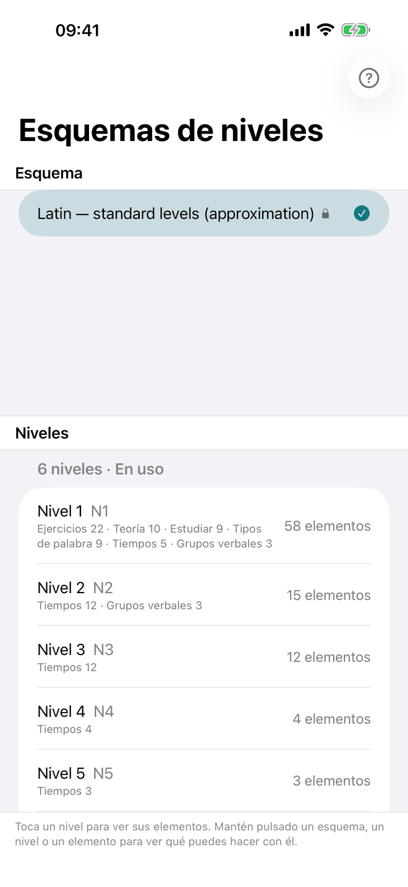
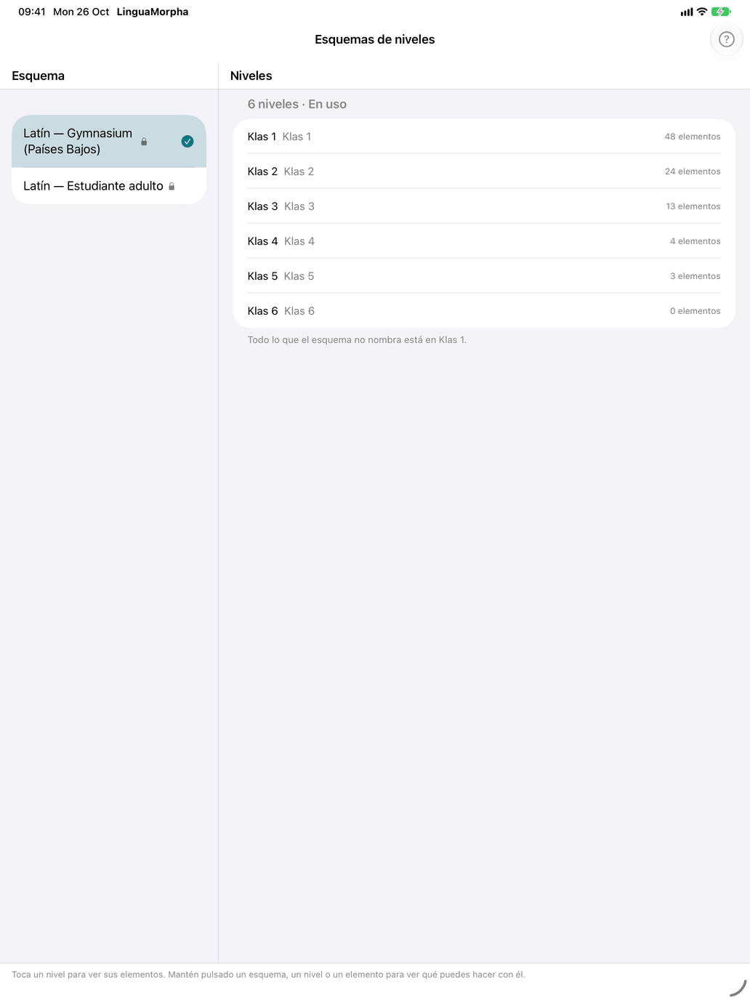
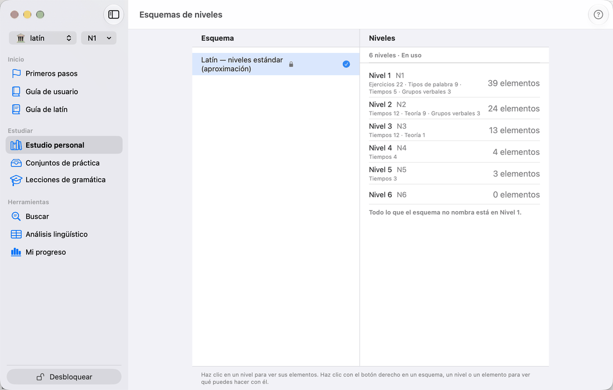

Niveles



Cada curso está organizado en niveles. Un esquema de niveles dice en qué nivel aparece por primera vez cada cosa — palabras, tiempos y el resto de la gramática, ejercicios y teoría — y tu nivel decide cuánto de todo eso ves. Los niveles se acumulan: en el tercer nivel ves todo lo de los tres primeros. Los esquemas estándar de español y francés nombran sus niveles según el MCER, de A1 a C2; el de latín tiene seis niveles propios.
Tu nivel
Tu nivel actual, por ejemplo A1, aparece en una sola etiqueta junto con la bandera del curso y el esquema en uso: en la barra de herramientas en el iPhone y el iPad, en la parte superior de la barra lateral en el Mac. Una instalación nueva empieza en el primer nivel, igual que un esquema que aún no has usado. Toca la etiqueta o haz clic en ella para abrir Esquema y nivel (en el Mac, una ventana propia). Tiene tres apartados:
- Alumno — quién estudia; consulta Alumnos más abajo.
- Esquema — los cursos, con una marca en el que estudias. Toca un curso para desplegar sus esquemas; elegir un esquema de otro curso cambia a ese curso. Un candado señala los esquemas de un curso que no has desbloqueado, y estos abren la tienda. Toca el esquema en uso para desplegar sus niveles: primero Todos los niveles — ningún nivel: se muestra todo, como en un curso sin esquema, salvo lo que el esquema deja fuera con No se muestra — y luego los niveles en los que empieza algo. Elige uno para cambiar lo que muestra la app; el nivel más alto muestra todo lo que el esquema muestra.
- Nivel — los tres interruptores de abajo, que solo se ofrecen en un nivel, no en Todos los niveles.
Los interruptores:
- Asignar elementos — para un esquema propio: mientras recorres la app, fija en cada elemento el nivel en que aparece por primera vez (consulta Asignar elementos en la app). Un esquema integrado no se puede cambiar, así que ahí no se ofrece.
- Mostrar niveles — pone en cada elemento una pequeña etiqueta con su nivel, solo informativa.
- Solo lo nuevo de este nivel — los mazos de significado contienen solo las palabras que añade tu nivel, no las de los niveles inferiores, y las listas de consulta se abren mostrando solo lo nuevo de tu nivel. Encima de cada lista, un control cambia entre Nuevo en A2 (n), Hasta A2 y Todos los niveles, que añade las palabras de niveles superiores; una opción vacía no aparece, y la búsqueda mira en todo. Un destello junto a tu nivel indica que está activado.
Cambiar de nivel muestra y oculta; no borra nada. Tus respuestas se guardan por elemento y vuelven a contar cuando el elemento regresa.
Tu nivel se aplica a Estudio personal: sus secciones, ejercicios, listas de referencia y teoría. Una página de teoría deja fuera las tarjetas por encima de tu nivel; También niveles posteriores en la parte superior las recupera, con su nivel al lado, y hace lo mismo con los tiempos de la página de un verbo. Los Conjuntos de práctica también lo siguen: un conjunto cuyos tiempos o la mayoría de cuyas palabras están por encima de tu nivel queda fuera de la lista (También niveles posteriores en la parte superior los muestra; es el mismo ajuste que en las páginas de teoría, y se conserva), y las palabras de un conjunto se recortan a tu nivel en su página. Las Lecciones de gramática siguen el mismo nivel, pero solo marcan lo que queda por encima: una lección por encima de tu nivel aparece atenuada, y un módulo que queda por completo por encima lo indica con Por encima de este nivel; todas las lecciones siguen abiertas. Con Todos los niveles nada queda por encima.
Alumnos
Varias personas pueden estudiar en un mismo dispositivo, cada una como alumno. El apartado Alumno de Esquema y nivel los muestra, con una marca en el activo; toca otro para cambiar a él. Añadir alumno añade uno con un nombre. Mantén pulsado un alumno (clic derecho en el Mac) para Renombrar y Eliminar; al eliminar se indica cuántas respuestas se van con él, y si se va el último, un alumno Predeterminado nuevo y vacío ocupa su lugar. El primer alumno se llama Predeterminado hasta que le cambias el nombre.
Cada alumno tiene su propio progreso, esquema y nivel; todo lo demás, como los ajustes, tus propios esquemas y los conjuntos de práctica, es compartido. En cuanto hay varios, la etiqueta muestra el nombre del alumno activo delante de la bandera. No puedes cambiar de alumno durante un ejercicio: termínalo antes.
Esquemas de niveles
Abre la ventana desde la fila Esquemas de niveles de la pestaña del curso en Ajustes, que muestra el esquema en uso. Tiene dos columnas, una encima de otra en el iPhone:
- Esquema — los esquemas integrados del curso, cada uno marcado con un candado, primero el estándar; después tus propios esquemas. Una marca señala el esquema en uso. Seleccionar un esquema muestra sus niveles; no cambia a él.
- Niveles — los niveles del esquema seleccionado, cada uno con cuántos elementos empiezan en él y de qué tipo, y una fila No se muestra para lo que el esquema deja fuera. La línea bajo la lista nombra el nivel que reúne todo lo que el esquema no nombra.
Cada acción está en un menú: clic derecho en el Mac, mantener pulsado en el iPhone y el iPad. La línea al pie de la ventana lo recuerda.
Trabajar con esquemas
El menú de un esquema ofrece:
- Usar — lo convierte en el esquema en uso.
- Duplicar… — lo copia con un nombre nuevo, con sus niveles y qué elemento está en qué nivel; la copia pasa a ser el esquema en uso. Así se parte de un esquema integrado.
- Exportar… — guarda el esquema como archivo, para conservarlo o dárselo a alguien.
- Resumen en PDF… — lo que empieza en cada nivel, como PDF para guardar, compartir o imprimir.
- Renombrar…, Repartir palabras…, Opciones… y Eliminar… — solo en tus propios esquemas. Eliminar… quita el esquema de este dispositivo; expórtalo antes si quieres conservarlo.
- Nuevo… e Importar… — también en el espacio vacío bajo la lista.
Nuevo… pide un nombre, los niveles y, en Empezar con, cómo empezar: Todo en el primer nivel, tras lo cual asignas los elementos en la app, o Tomar “…” de un esquema existente, eligiendo en Adónde van los niveles en qué nivel nuevo se convierte cada uno de sus niveles.
Importar… lee un archivo de esquema. Un archivo de otro curso, uno que no encaja en este curso, uno demasiado grande o uno que no es un archivo de niveles se rechaza con una frase que explica por qué. Si ya tienes ese esquema, la app pregunta antes de que el archivo lo sustituya. Tras importar, la app dice cuántos niveles han llegado y qué no coincidía: los nombres que este curso no conoce se ignoran, y las palabras que el archivo no menciona siguen la regla de palabras del esquema o quedan en el nivel que reúne todo lo que no tiene nombre.
Abrir un nivel
Selecciona un nivel para ver sus elementos por nombre, agrupados por tipo — verbos, sustantivos, tiempos, ejercicios, etc. ‹ Niveles vuelve atrás. En un esquema propio, el menú de un elemento ofrece Mover a otro nivel, o a — para dejarlo fuera; en el Mac, ⌘-clic o ⇧-clic selecciona antes varios elementos.
Cambiar los niveles
En un esquema propio, el menú de un nivel ofrece Renombrar…, Insertar nivel antes…, Insertar nivel después…, Subir, Bajar y Eliminar…. Un nivel nuevo empieza vacío, y mover un nivel se lleva sus elementos. Eliminar un nivel vacío simplemente lo quita; eliminar uno con elementos — o el nivel que reúne todo lo que no tiene nombre — pregunta adónde van: a otro nivel, o a —, donde no se muestran en ningún nivel.
Repartir palabras
Repartir palabras… en un esquema propio coloca tipos de palabra enteros en los niveles de una vez. Para Verbos, Sustantivos, Adjetivos y Adverbios elige:
- Sin cambios — deja el tipo como está.
- Por frecuencia — las palabras más frecuentes en el primer nivel, y cada nivel siguiente la mitad más. La frecuencia se mide en un corpus de la lengua; una palabra sin valor medido se coloca según su banda de frecuencia.
- Todo en el nivel más bajo.
- Sin asignar — las palabras de ese tipo no se muestran en ningún nivel.
Cada fila dice cuántas palabras tiene el tipo y cómo está repartido ahora. Vista previa muestra cuántas palabras de cada tipo recibiría cada nivel. Aplicar pregunta antes, porque sustituye lo que hayas asignado a mano para esos tipos.
La elección se guarda con el esquema. Las palabras que se añadan después a la app la siguen: una palabra nueva va al nivel cuyas palabras son igual de frecuentes, y ninguna palabra ya colocada se mueve.
Opciones del esquema
Opciones… en un esquema propio reúne los interruptores que no tratan de niveles:
- Mostrar traducciones — desactívalo para un alumno que ya habla el idioma: las listas de palabras, los ejercicios y las guías no muestran traducción. Los ejercicios de significado dejan de tener sentido; ocúltalos en la columna Niveles.
- Nombres de los tiempos — como los nombran los cursos para extranjeros o como los nombran las escuelas del propio idioma. Solo en un curso que tiene las dos tradiciones. Todas las tablas, ejercicios y guías siguen la elección.
- Idioma de la aplicación — el idioma de la app que el esquema fija, una sola vez, al elegirlo; Dejar como está no fija ninguno. El alumno puede cambiarlo después en Ajustes.
- Elementos sin nivel en — el nivel en el que está todo lo que el esquema no nombra: una palabra añadida a la app más tarde, un ejercicio sin nivel asignado.
Los esquemas integrados conservan sus propios ajustes; duplica uno para cambiarlos.
Asignar elementos en la app
Con Asignar elementos activado, cada elemento lleva una etiqueta con su nivel — filas de palabras, tiempos, ejercicios, teoría, temas — y los elementos por encima de tu nivel se atenúan en lugar de ocultarse. Toca una etiqueta para elegir el nivel del elemento: su propio nivel y los contiguos, Otros niveles para el resto, y No se muestra para dejarlo fuera. Un lápiz junto a tu nivel te recuerda que la asignación está activada; desactívala en Esquema y nivel.
Nivel y ámbito de palabras
El nivel decide lo que existe en el Estudio personal. Seleccionar ámbito de palabras lo acota además por tema, y las filas de selección de cada sección por grupo. Consulta Elegir qué entra en juego.